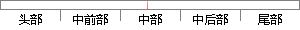

因此没有机会或没有条件出仕的士人长期或暂时性远离社会政治活动，游走于社会边缘的行为。
片段位置图

相似结果|
1
原句片段：因此没有机会或没有条件出仕的士人长期或暂时性远离社会政治活动，游走于社会边缘的行为。
相似片段 1：那些向往入仕但却无机会无能力入仕之人不是隐士,那些没有文化的农夫樵子细民野...有机会或有条件出仕的士人选择远离社会政治活动,游走于社会边缘,隐士便由此而来。...
|
※ 片段修改建议 ※
近似词参考：- 因此：是以 因而
- 长期：持久 恒久 历久 长时间
- 远离：阔别
- 边缘：边沿
- 行为：行动 举动
系统自动生成语句：是以没有机会或没有条件出仕的士人持久或暂时性阔别社会政治活动，游走于社会边沿的行动。
注：本片段修改建议为系统自动生成，仅供参考。